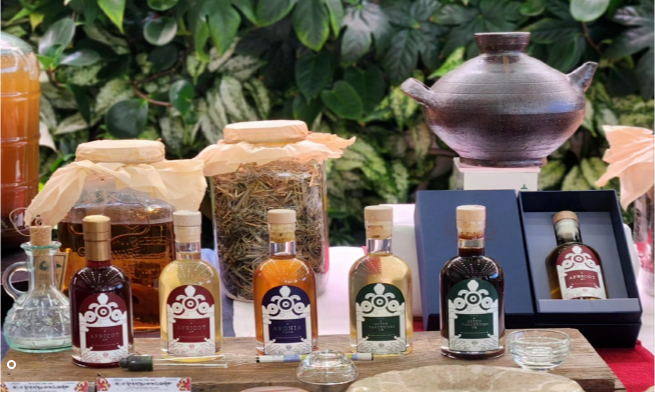
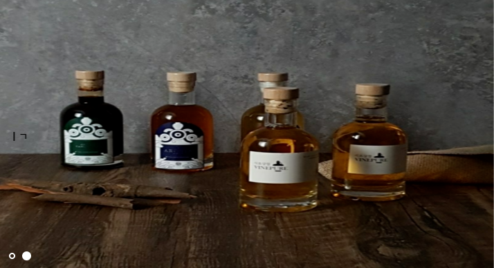

식초상점(Vinepure)의 온라인 마케팅 현황과 브랜드 자산을 진단하고, 발효 전문가의 전문성이 실제 구매와 재구매로 이어질 수 있도록 네이버 스마트스토어 판매형 개편 전략을 정리했습니다.

REPORT 01
온라인 마케팅
현황 분석 보고서
홈페이지, 네이버 스마트스토어, Instagram, YouTube 등 현재 온라인 채널을 진단하고 식초상점이 보유한 브랜드 자산과 핵심 개선과제를 정리했습니다.
보고서 보기REPORT 02
네이버 스마트스토어
‘판매형’ 개편 전략
상품 진열 중심의 스토어를 고객이 쉽게 고르고, 신뢰하고, 구매하고, 다시 찾는 구조로 전환하기 위한 상품·상세페이지·세트·리뷰·재구매 전략입니다.
보고서 보기CORE STRATEGY
검색 → 발효 전문가 발견 → 전문성 확인 → 제품 선택 → 구매 → 재구매·교육·B2B